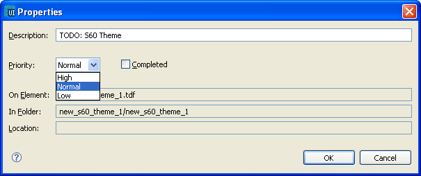
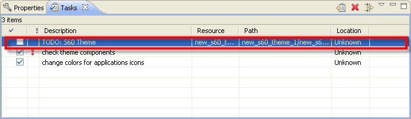

Adding Tasks
You can add tasks in the Editor, Components View, or Outline View, by
selecting a component and using Edit
- Add Task from the main menu or Add Task on the context menu, or
directly in the Tasks view.
- In the Editor, right-click a component and select Add task.
- The New Task window opens with some information about the task.
On Resources, In Folder, and Location fields have information about the
location of the task. The task also has a default name.
- Fill in information about the task:
- Use the default description or write a new description of the
task.
- Select a priority for the task from the drop-down list.
- Click OK.
- The task is added to the list of tasks in the Tasks view.

Figure: Adding Tasks

Figure: Task List
Note: You can also add tasks by right-clicking anywhere in the
Tasks view and selecting Add task. However, this way the On Resources,
In Folder, and Location fields cannot be used to locate the component
that the task is for, and you cannot use the task as a shortcut to the
component.